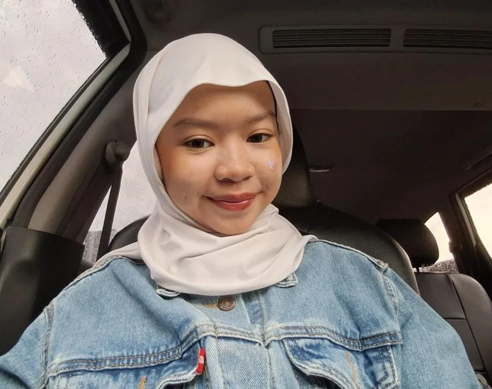
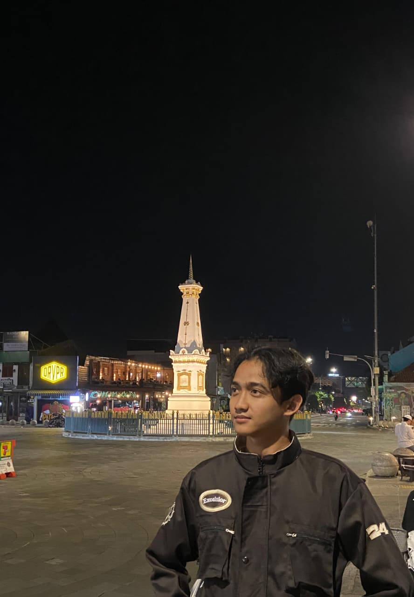
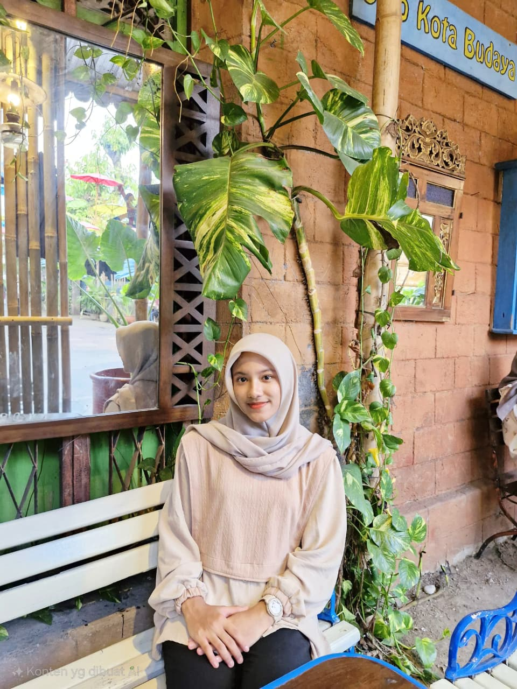

MISI EDUKASI · AUGMENTED REALITY
AR NUSANTARA
Lima gunung tertinggi Indonesia menantimu. Tekan PLAY, kenali Cincin Api, lalu buka tiap gunung dan pindai kode AR-nya.
Musik latar & efek suara menyala otomatis saat PLAY
♫ About You · The 1975
SEKILAS INDONESIA
Indonesia, Negeri di Atas Cincin Api
Indonesia adalah negara kepulauan terbesar di dunia. Letaknya di garis khatulistiwa, di antara Benua Asia dan Australia serta Samudra Pasifik dan Hindia. Di balik hijaunya alam, negeri ini berdiri di atas pertemuan lempeng bumi, dan dari sanalah gunung-gunung tinggi itu lahir.
MISI KAMU
Tiga langkah sampai puncak
Adu Tinggi: 5 Puncak Teratas
Bandingkan ketinggiannya dari 0 sampai 4.884 mdpl. Klik satu batang untuk membuka gunungnya.
Tiap gunung punya data lengkap dan model 3D yang bisa kamu lihat lewat AR.
PILIH GUNUNGMU
Top 5 Gunung Tertinggi di Indonesia
Pahami karakteristiknya, lalu lihat bentuk 3D-nya lewat AR. Pilih satu gunung untuk mulai.
KOLEKSI GUNUNG: 0/5
DI BALIK LAYAR
Kredit & Tim Pembuat
AR Nusantara dikerjakan oleh tiga orang: mulai dari riset data gunung, pemodelan 3D, sampai menyusun cerita Cincin Api untuk pelajar.



Proyek visualisasi informasi geospasial berbasis augmented reality. Gunung-gunung tertinggi Indonesia dimodelkan dalam 3D untuk edukasi, lalu dihubungkan ke kode QR yang bisa dipindai langsung dari halaman gunung.